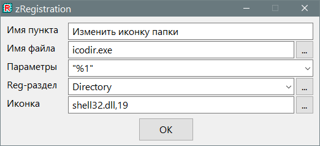

zRegistration
Назначение
Добавляет программу в контекстное меню.

утилитка добавляет в контекстное меню проводника разные программы.
Идея возникла по причине необходимости регистрации в реестре некоторых программ, при этом встраивание этого кода в саму программу увеличило бы её размер в 2-5 раз. Поэтому сделан внешний отдельный файл, который должен располагаться рядом с программой. После регистрации в реестре файл может быть удалён.
Универсальные возможности файла:
1. В ini-файле есть предварительные настройки для какой нибудь программы. Если есть желание делать в один клик, то это тот самый случай.
2. Если нет ini-файла, то выполняется поиск exe-файла рядом с утилитой, сама утилита при этом игнорируется, сама себя не ищет. Первый найденный файл будет добавлен как подозреваемый к регистрации в реестре. Имя пункта будет как имя exe-файла. Иконка - путь к exe-файлу. То есть ручная работа в большинстве случаев сводится только к изменению имени пункта контекстного меню проводника.
3. Если запись уже есть в реестре, то предлагается её удалить. Если пользователь отказался удалять, то предполагается добавить новую запись и появляется диалог ввода нового имени раздела запускаемой программы. Если имя не изменено, то произойдёт перезапись, если стереть имя или закрыть диалог ввода крестиком, то это отмена операции.
4. На данный момент доступны стандартные разделы, Directory, Directory\Background, Drive, *, Unknown. То есть здесь используются разделы, которые не учтены в программе ContMenuFiles, из за чего для добавления в меню папок и дисков приходилось создавать reg-файлы и каждый раз подстраивать их под определённый путь к программе. Для раздела реестра Directory\Background нужно использовать "%V" вместо "%1"
Разделы реестра:
1. Directory\Background - рабочий стол, и меню папки на белом фоне, при выборе этого пункта нужно использовать параметр %V как передачу пути папки, а для диспетчера задач - без параметров.
2. * - для всех файлов
3. Unknown - для незарегистрированных файлов.
4. Directory и Drive - тут понятно из названий, папки и диск.
Все эти разделы находятся в корне HKEY_CLASSES_ROOT. Перейти в них можно введя в адресной строке реестра HKEY_CLASSES_ROOT\* и нажать Enter (в Win10), чтобы перейти в этот раздел, одинаково и с другими разделами. Так как в Win7 нет адресной строки, то после нажатия ОК этой утилиты согласится перейти в раздел реестра (последнее сообщение при удачной записи в реестр предлагает открыть раздел) и откроется в этом разделе. Аналогично в строке выбора раздела реестра можно использовать любые другие разделы, например ProgID от типов файлов, и это тоже сработает. При переходе в раздел реестра можно там же удалить запись, то есть произвести безопасные эксперименты.
Почему целиком не указан путь к exe-файлу? Изначально утилитка нацелена на регистрацию рядом лежащего файла и путь известен. Но при бросании другого файла их другой папки всё равно вставляется только имя, но рабочая директория меняется, поэтому всё также работает. Также можно указать путь целиком, если утилита видит в строке символы разделения пути "\", то она воспринимает этот путь как полный и не использует рабочую папку. Все возможные варианты поддержаны.
Функционал "перетащить и бросить" работает почти идеально. Так как выяснилось, что утилита не может определить поле ввода под курсором, в который брошен файл, то разделение происходит по типу. Если файл является одним из "dll ico cpl ocx ax icl", то он будет вставлен в поле иконки, иначе втавляется в поле exe-файла. Поле файла не детектируется на допустимость, так как неизвестно какой тип будет использоваться, возможны расширения, которые мне не известны, например com, scr, bat или другой зарегистрированный индивидуально у пользователя.
Возможность добавления раздела реестра через ini-файл позволяет упростить добавление пункта в несколько разделов, выбирая из готового набора.